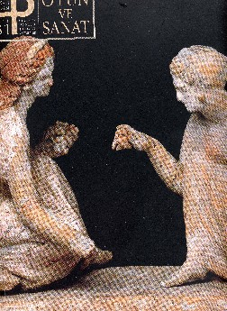
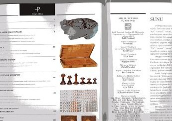
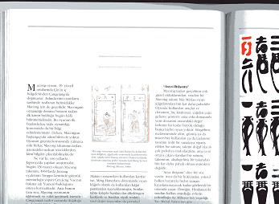

トルコと云えば、ヨーロッパとアジアの交わるところに位置する。地理的だけでなく文化的にもアジアとヨーロッバが交じり合う場所にある。そこでこの地は文明発祥以来、様々な民族が訪れ、去っていった。
そのトルコは、親日感情の高いことでも知られている。聞くところに寄れば、帝政ロシアの南下政策に圧迫されたいたトルコは、日ロ戦争でバルチック艦隊を撃破した日本に好意を感じていた。その頃、トルコの軍船が太平洋沖で遭難。漂着した軍人を居合わせた日本人が救助した。それ以来、非常に親日感情が高いそうだ。
そのトルコに「P Art and Culture magazine」（PArt andCulture出版社）という高級美術雑誌がある。これはその最新号。

正面からの書影だから、厚みが分かりにくいいが、厚さ１センチ半ほど。縦30センチ、横23センチ。とうぜん美術写真満載のズッシリした本である。美術雑誌だから、美術写真、美術情報が主体である。しかしチェスや古代ゲームの駒などは、美術作品と言えるものも多い。そこでこの最新号では、チェスや古代ゲームの駒などの特集が組まれた。これがその目次。

その古代ゲーム特集の一環として、江橋崇・法政大学法学部教授の麻雀ゲームに関する論文が掲載された。

もちろん千葉の麻雀博物館所蔵の有名麻雀牌の写真もいっぱい掲載されている。
論文は、もちろんトルコ語で書いてある。しかし残念ながら、σ(-_-)はポリネシア語とスワヒリ語は通訳ができるほど堪能だが、トルコ語は一言半句も分からない。（笑）
そこで今回は本の紹介だけとし、論文内容については、麻雀博物館で翻訳が完成したら報告することにする。(^-^；
なお、この美術雑誌は、アメリカ・ニューヨークのメトロポリタン美術館、フランス・パリのルーブル美術館、ドイツ・ボンのクスト美術館に加え、アメリカ、ドイツの主な書店で販売されるそうだ。
|